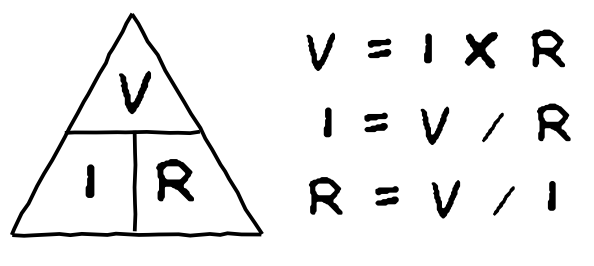
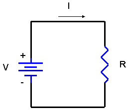

Η ένταση του ρεύματος που διαρρέει ένα κύκλωμα είναι ανάλογη της εφαρμοζόμενης τάσης και αντιστρόφως ανάλογη της αντίστασης του κυκλώματος
 Μπορείτε να υπολογίσετε οποιαδήποτε παράμετρο R, V ή I άν γνωρίζεται δύο εκ των τριών παραμέτρων. Χρησιμοποιήστε το αναδυόμενο μενού επιλογών "Υπολογισμός:" για να επιλέξετε την άγνωστη μεταβλητή. Τα πεδία με πράσινο χρώμα είναι τα πεδία των γνωστών μεταβλητών και ενεργοποιούνται ανάλογα με την επιλογή της άγνωστης μεταβλητής.
Τιμή της αντίστασης R (Ω)
Τιμή της τάσης V (Volt)
Τιμή του Ρεύματος I (A)